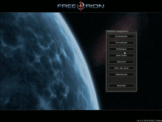
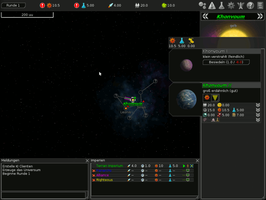

FreeOrion
Dieser Artikel wurde für die folgenden Ubuntu-Versionen getestet:
Ubuntu 16.04 Xenial Xerus
Zum Verständnis dieses Artikels sind folgende Seiten hilfreich:
FreeOrion  ist ein in Entwicklung befindliches rundenbasiertes Weltraum- und 4X-Strategiespiel. Spielprinzip und Name sind inspiriert von der "Master of Orion"-Reihe, es handelt sich aber um keinen Klon, denn es wurden auch neue Ideen umgesetzt. Das Spiel und seine Inhalte sind Open Source, veröffentlicht unter verschiedenen Lizenzen (Lizenzinfo ). Um einen Eindruck vom Spiel zu bekommen, kann man sich auf der FreeOrion-Seite aktuelle Screenshots anschauen. Auf Youtube gibt es ein kurzes Videotutorial für FreeOrion, welches ebenfalls einen Einblick in das FreeOrion Videospiel gewährt: https://www.youtube.com/watch?v=NhZawhGK8BU . Das Spiel läuft unter Windows, Mac OS, Linux und BSD-Systemen.
ist ein in Entwicklung befindliches rundenbasiertes Weltraum- und 4X-Strategiespiel. Spielprinzip und Name sind inspiriert von der "Master of Orion"-Reihe, es handelt sich aber um keinen Klon, denn es wurden auch neue Ideen umgesetzt. Das Spiel und seine Inhalte sind Open Source, veröffentlicht unter verschiedenen Lizenzen (Lizenzinfo ). Um einen Eindruck vom Spiel zu bekommen, kann man sich auf der FreeOrion-Seite aktuelle Screenshots anschauen. Auf Youtube gibt es ein kurzes Videotutorial für FreeOrion, welches ebenfalls einen Einblick in das FreeOrion Videospiel gewährt: https://www.youtube.com/watch?v=NhZawhGK8BU . Das Spiel läuft unter Windows, Mac OS, Linux und BSD-Systemen.
|  |  |
| Menü | Spielszene |
Installation¶
freeorion (universe)
 mit apturl
mit apturl
Paketliste zum Kopieren:
sudo apt-get install freeorion
sudo aptitude install freeorion
Der folgende Abschnitt galt für ältere Versionen:
Zunächst lädt man sich auf der Download-Seite eine Version des Spiels herunter; zur Auswahl stehen neuere Testversionen im Ordner "Test" und ältere, aber in der Regel stabilere Versionen. Derzeit ist die aktuelle stabile Version 0.4.3; sie wird für Ubuntu als DEB-Paket in einer 32-Bit-Version und einer 64-Bit-Version angeboten (Stand: November 2013). Anschließend wird das heruntergeladene DEB-Paket manuell installiert. [1]
Start¶
Das Spiel wird im Menü unter dem Namen "Freeorion" oder direkt mit dem Terminalbefehl [2] freeorion gestartet.
Deutsche Lokalisierung¶
Die deutsche Lokalisierung lässt sich durch Auswählen der Datei de.txt in "Options -> UI" und einem Neustart des Spiels aktivieren.

Infobox¶
| FreeOrion | |
| Originaltitel: | FreeOrion, a free, open source, turn-based 4X game |
| Genre: | rundenbasierte Globalstrategie (4X), Science Fiction |
| Sprache: |  und weitere und weitere |
| Veröffentlichung: | in Entwicklung, Version 0.4.3 am 2. August 2013 |
| Systemvoraussetzungen: | > 1 GHz CPU, 2 GB RAM, 3D-Grafikkarte mit OpenGL 2.0 und einer Auflösung von 1024x768 Pixel |
| Medien: | Download |
| Läuft mit: | nativ |
Links¶
FreeOrion.org, offizielle Homepage
Full Circle Magazine #14 (pdf)
 , Abschnitt „Top5 Space Games“
, Abschnitt „Top5 Space Games“
- Erstellt mit Inyoka
-
 2004 – 2017 ubuntuusers.de • Einige Rechte vorbehalten
2004 – 2017 ubuntuusers.de • Einige Rechte vorbehalten
Lizenz • Kontakt • Datenschutz • Impressum • Serverstatus -
Serverhousing gespendet von